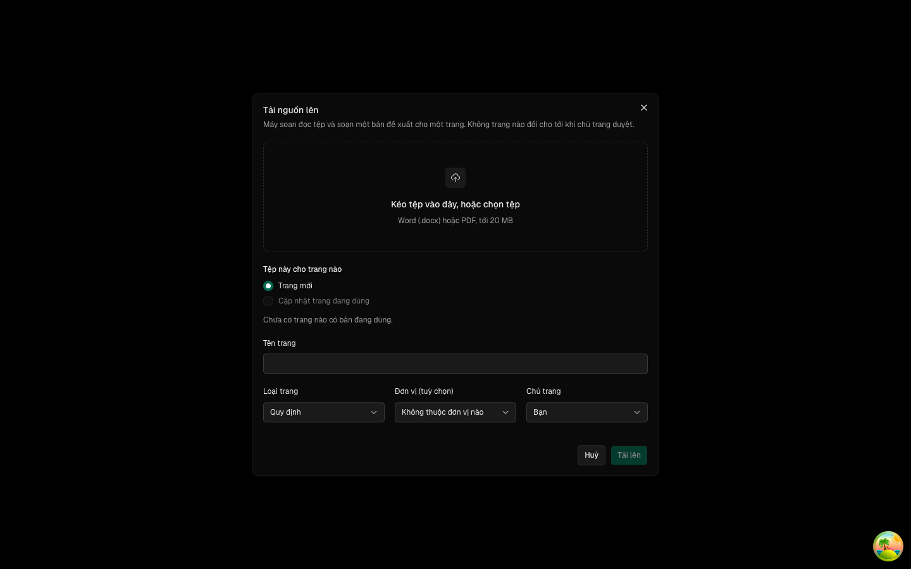
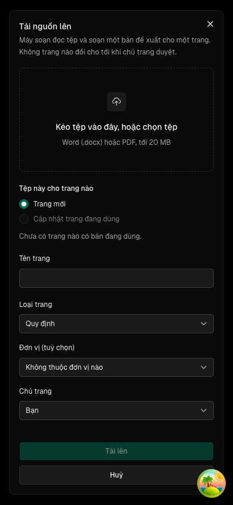
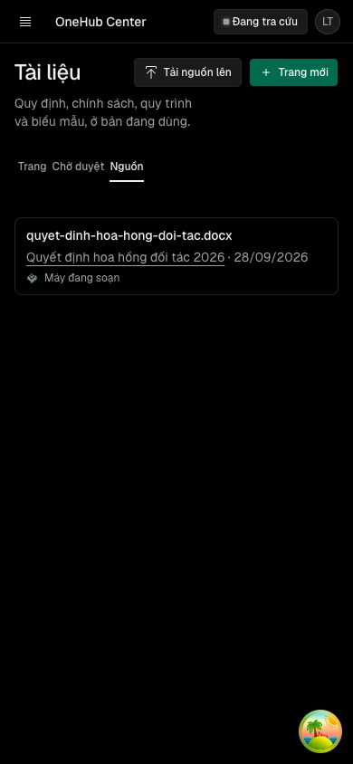

Máy soạn bản đề xuất — tải tệp quy định đang có (Word, PDF có chữ) lên kho tài liệu, máy soạn thành bản đề xuất có trích đoạn nguồn, chủ trang đọc nguồn cạnh nhau rồi duyệt
Các eval
| Eval | Tiêu chí | Loại | Verdict | run_id | verified_at |
|---|---|---|---|---|---|
| E1 | AC-1 | script | PASS | minted-may-soan-de-xuat-E1-r5 | 2026-09-28T10:29:19Z |
| E1b | AC-1 | script | PASS | minted-may-soan-de-xuat-E1b-r5 | 2026-09-28T10:29:19Z |
| E2 | AC-2 | test | PASS | minted-may-soan-de-xuat-E2-r5 | 2026-09-28T10:29:19Z |
| E2u | AC-2 | ui-check | PASS | msd-E2u thuc: tien-de->phien-do crm_wizardly_lumiere_e25e92_do (app http://localhost:4313, api http://localhost:4631) | chieu-do: crm_msd_tai_nguon_chieu_do_do (app http://localhost:4161, api http://localhost:4242) | 2026-09-28T10:29:19Z |
| E2t | AC-12 | script | PASS | minted-may-soan-de-xuat-E2t-r5 | 2026-09-28T10:29:19Z |
| E3 | AC-3 | test | PASS | minted-may-soan-de-xuat-E3-r5 | 2026-09-28T10:29:19Z |
| E3d | AC-3 | test | PASS | minted-may-soan-de-xuat-E3d-r5 | 2026-09-28T10:29:19Z |
| E4 | AC-4 | test | PASS | minted-may-soan-de-xuat-E4-r5 | 2026-09-28T10:29:19Z |
| E5 | AC-5 | test | PASS | minted-may-soan-de-xuat-E5-r5 | 2026-09-28T10:29:19Z |
| E5d | AC-5 | test | PASS | minted-may-soan-de-xuat-E5d-r5 | 2026-09-28T10:29:19Z |
| E6 | AC-6 | test | PASS | mul3vj2c46xh | 2026-09-28T10:29:19Z |
| E7 | AC-7 | test | PASS | mul3vvapgpkc | 2026-09-28T10:29:19Z |
| E8 | AC-8 | script | PASS | minted-may-soan-de-xuat-E8-r5 | 2026-09-28T10:29:19Z |
| E8b | AC-8 | test | PASS | minted-may-soan-de-xuat-E8b-r5 | 2026-09-28T10:29:19Z |
| E9 | AC-9 | test | PASS | minted-may-soan-de-xuat-E9-r5 | 2026-09-28T10:29:19Z |
| E10 | AC-10 | test | PASS | minted-may-soan-de-xuat-E10-r5 | 2026-09-28T10:29:19Z |
| E10b | AC-10 | test | PASS | minted-may-soan-de-xuat-E10b-r5 | 2026-09-28T10:29:19Z |
| E10d | AC-10 | test | PASS | minted-may-soan-de-xuat-E10d-r5 | 2026-09-28T10:29:19Z |
| E11 | AC-11 | test | PASS | minted-may-soan-de-xuat-E11-r5 | 2026-09-28T10:29:19Z |
| E11b | AC-11 | test | PASS | minted-may-soan-de-xuat-E11b-r5 | 2026-09-28T10:29:19Z |
| E11u | AC-11 | ui-check | PASS | minted-may-soan-de-xuat-E11u-r5 | 2026-09-28T10:29:19Z |
| E11s | AC-11 | script | PASS | design-gate-40e4645265 | 2026-09-28T10:29:19Z |
| E12 | AC-12 | test | PASS | minted-may-soan-de-xuat-E12-r5 | 2026-09-28T10:29:19Z |
| E13 | AC-13 | test | PASS | minted-may-soan-de-xuat-E13-r5 | 2026-09-28T10:29:19Z |
| E13b | AC-13 | script | PASS | minted-may-soan-de-xuat-E13b-r5 | 2026-09-28T10:29:19Z |
| E16 | AC-16 | test | PASS | minted-may-soan-de-xuat-E16-r5 | 2026-09-28T10:29:19Z |
| E14 | AC-14 | test | PASS | minted-may-soan-de-xuat-E14-r5 | 2026-09-28T10:29:19Z |
| E15a | AC-15 | script | PASS | minted-may-soan-de-xuat-E15a-r5 | 2026-09-28T10:29:19Z |
| E15j | AC-15 | judgment | UNCERTAIN | — | — |
Chi tiết từng eval
PASS E1 · script
AC-1: Given cơ sở dữ liệu có dữ liệu của lượt 1, When chạy `migration` của lượt này, Then mọi câu lệnh chỉ tạo bảng `TaiLieuNguon`, thêm cột rỗng được vào `TaiLieuDeXuat`, tạo chỉ mục và khoá ngoại mới — không lệnh nào sửa kiểu, đổi tên, xoá cột hay xoá dòng; And áp được trên kho test mới tinh và trên bản sao có trang, phiên bản, đề xuất của lượt 1 mà số dòng mọi bảng cũ giữ nguyên.
migration moi: 20261003010000_may_soan_de_xuat · so cau lenh: 11
PASS E1b · script
AC-1: Given cơ sở dữ liệu có dữ liệu của lượt 1, When chạy `migration` của lượt này, Then mọi câu lệnh chỉ tạo bảng `TaiLieuNguon`, thêm cột rỗng được vào `TaiLieuDeXuat`, tạo chỉ mục và khoá ngoại mới — không lệnh nào sửa kiểu, đổi tên, xoá cột hay xoá dòng; And áp được trên kho test mới tinh và trên bản sao có trang, phiên bản, đề xuất của lượt 1 mà số dòng mọi bảng cũ giữ nguyên.
khang-dinh=7/7
PASS E2 · test
AC-2: Given một thành viên bất kỳ (kể cả vai `okr`) và Blob đã bật, When tải lên một tệp `.docx` hay `.pdf` ≤ 20 MB với đích «trang mới» (tên, loại, chủ trang, đơn vị tuỳ chọn) hoặc «cập nhật» một trang đang dùng, Then đúng một `TaiLieuNguon` được ghi với `sha256` do máy chủ tính từ byte đã lưu trên Blob (khớp `sha256` của tệp gốc), tên tệp, cỡ, người tải, trang đích; And blob là `private` và hàng không lưu URL công khai nào; And đúng một `AgentTask` loại `soan-tu-nguon` được ghi trong cùng lần ghi; And đích trang mới tạo trang chưa có bản đang dùng như lượt 1. (cross-layer)
PASS E2u · ui-check
AC-2: Given một thành viên bất kỳ (kể cả vai `okr`) và Blob đã bật, When tải lên một tệp `.docx` hay `.pdf` ≤ 20 MB với đích «trang mới» (tên, loại, chủ trang, đơn vị tuỳ chọn) hoặc «cập nhật» một trang đang dùng, Then đúng một `TaiLieuNguon` được ghi với `sha256` do máy chủ tính từ byte đã lưu trên Blob (khớp `sha256` của tệp gốc), tên tệp, cỡ, người tải, trang đích; And blob là `private` và hàng không lưu URL công khai nào; And đúng một `AgentTask` loại `soan-tu-nguon` được ghi trong cùng lần ghi; And đích trang mới tạo trang chưa có bản đang dùng như lượt 1. (cross-layer)




PASS E2t · script
AC-12: Given ma trận viết trước gồm sáu người (người tải, chủ trang đích, `owner`, `admin`, thành viên khác, vai `okr`) × ba trạng thái nguồn (chưa được bản đang dùng nào trích · được bản đang dùng trích · đề xuất của nó bị trả lại), When mỗi người gọi danh sách nguồn, `nguon.get`, `nguon.taiVe` và mở bản máy soạn, Then người tải và người duyệt được thấy và tải về ở mọi trạng thái; And nguồn được bản đang dùng trích thì mọi thành viên tải về được từ mục «Nguồn» của màn đọc trang; And mọi ca không được thấy trả `NOT_FOUND` giống id không tồn tại; And `taiVe` trả URL ký hết hạn ≤ 5 phút, tải về đúng byte có `sha256` của hàng; And trên Blob thật, trình duyệt PUT được tệp vào URL ký của `xinCho`, `nhan` băm đúng byte đó, GET bằng URL của `taiVe` ra đúng byte, và GET không ký vào blob bị từ chối. (cross-layer)
phien-do: xong — mã 0
PASS E3 · test
AC-3: Given hộp tải, When tệp sai loại (đuôi hợp lệ nhưng byte không phải PDF hay docx, `.doc`, ảnh), rỗng, hoặc > 20 MB, hoặc đích là trang chưa có bản đang dùng, Then bị từ chối với câu lỗi dưới ô chọn tệp; And không `TaiLieuNguon`, không `AgentTask`, không trang nào được ghi; And blob đã PUT lên trong lượt bị từ chối bị xoá. (cross-layer)
test-run: dropped crm_mul3vmgxvda8_test
PASS E3d · test
AC-3: Given hộp tải, When tệp sai loại (đuôi hợp lệ nhưng byte không phải PDF hay docx, `.doc`, ảnh), rỗng, hoặc > 20 MB, hoặc đích là trang chưa có bản đang dùng, Then bị từ chối với câu lỗi dưới ô chọn tệp; And không `TaiLieuNguon`, không `AgentTask`, không trang nào được ghi; And blob đã PUT lên trong lượt bị từ chối bị xoá. (cross-layer)
Ran 3 tests across 1 file. [1020.00ms]
PASS E4 · test
AC-4: Given một nguồn đã có, When tải lên đúng những byte đó lần nữa (tên tệp khác cũng vậy), Then trả về nguồn cũ với thông báo «Nguồn này đã có», không ghi hàng hay việc mới, blob mới bị xoá; And tải một tệp khác byte cho cùng trang thì ra một nguồn mới và một việc soạn mới; And không thủ tục nào sửa hay xoá được tên tệp, `sha256`, `blobPathname`, người tải của một nguồn.
test-run: dropped crm_mul3vl0h4j9o_test
PASS E5 · test
AC-5: Given `BLOB_READ_WRITE_TOKEN` không đặt, When mở kho tài liệu và gọi các thủ tục nạp nguồn, Then nút «Tải nguồn lên» khoá với câu «Chưa bật lưu tệp nguồn — nhờ quản trị cấu hình»; And `xinCho`, `nhan`, `taiVe` trả `PRECONDITION_FAILED` với thông điệp ghim, không 500; And API, app và agent khởi động không lỗi, mọi thủ tục của lượt 1 chạy như cũ. (cross-layer)
test-run: dropped crm_mul3vldu1z3f_test
PASS E5d · test
AC-5: Given `BLOB_READ_WRITE_TOKEN` không đặt, When mở kho tài liệu và gọi các thủ tục nạp nguồn, Then nút «Tải nguồn lên» khoá với câu «Chưa bật lưu tệp nguồn — nhờ quản trị cấu hình»; And `xinCho`, `nhan`, `taiVe` trả `PRECONDITION_FAILED` với thông điệp ghim, không 500; And API, app và agent khởi động không lỗi, mọi thủ tục của lượt 1 chạy như cũ. (cross-layer)
Ran 2 tests across 1 file. [909.00ms]
PASS E6 · test
AC-6: Given ma trận tệp mẫu viết trước lưu trong hồ sơ — docx có tiêu đề, danh sách, bảng và số liệu; PDF có lớp chữ nhiều trang; PDF chỉ có ảnh (bản quét); PDF lớp chữ hỏng (`(cid:`, U+FFFD); docx hỏng; PDF có mật khẩu — When `apps/agent` xử lý việc `soan-tu-nguon`, Then docx và PDF có chữ cho chữ đã đọc chuẩn NFC chứa đúng các chuỗi mốc viết trước; And bản quét và PDF lớp chữ hỏng thành «cần gõ tay», không mở phiên máy soạn, không đề xuất nào; And docx hỏng và PDF mật khẩu thành «Chưa soạn được» với lý do nêu tên lỗi; And hash byte tải về lệch `sha256` của hàng thì dừng với lý do, không soạn.
PASS E7 · test
AC-7: Given một nguồn đã đọc chữ và trang «Quy tắc viết» (slug `quy-tac-viet`) có bản đang dùng, When máy soạn nộp một bản hợp lệ, Then đúng một `TaiLieuDeXuat` «chờ duyệt» được ghi qua hàm tạo đề xuất dùng chung với API, có `taoBoiId` là người tải, `nguonId`, `trichDoan` parse được bằng khuôn Zod, nội dung NFC đã qua bộ tuần tự hoá của lượt 1; And đích trang có sẵn thì bản gốc là bản đang dùng lúc soạn; And lời dặn gửi cho model chứa nội dung bản đang dùng của trang «Quy tắc viết»; And bản đang dùng của trang đích không đổi. (cross-layer)
test-run: dropped crm_mul3vvapgpkc_test
PASS E8 · script
AC-8: Given ma trận mọi đường ghi của máy soạn, When quét mã `apps/agent` và chạy một lượt soạn đạt, Then không đường nào của máy soạn ghi `TaiLieuPhienBan` hay `TaiLieuTrang.banDangDungId` hay gọi thủ tục duyệt; And một bản máy soạn chỉ thành bản đang dùng qua `taiLieu.approve` của người duyệt được (chủ trang, `owner`, `admin`) với `diffHash` khớp, như lượt 1; And người tải không phải chủ trang, thành viên khác và vai `okr` nhận `FORBIDDEN` khi duyệt nó. (cross-layer)
PASS E8b · test
AC-8: Given ma trận mọi đường ghi của máy soạn, When quét mã `apps/agent` và chạy một lượt soạn đạt, Then không đường nào của máy soạn ghi `TaiLieuPhienBan` hay `TaiLieuTrang.banDangDungId` hay gọi thủ tục duyệt; And một bản máy soạn chỉ thành bản đang dùng qua `taiLieu.approve` của người duyệt được (chủ trang, `owner`, `admin`) với `diffHash` khớp, như lượt 1; And người tải không phải chủ trang, thành viên khác và vai `okr` nhận `FORBIDDEN` khi duyệt nó. (cross-layer)
test-run: dropped crm_mul3vynv13nj_test
PASS E9 · test
AC-9: Given ma trận kịch bản viết trước cho `nop_ban_de_xuat` — đạt; một số mới không nằm trong trích đoạn nào; trích đoạn không có trong chữ nguồn; trích đoạn khác nguồn chỉ ở vị trí dấu thanh (`hoà`/`hóa`), NBSP hay kiểu nháy; ngày và phần trăm kiểu Việt (`01/10/2026`, `1,5%`); số đã có trong bản gốc không trích; số thứ tự danh sách — When công cụ kiểm, Then kịch bản đạt, lệch dấu thanh, số cũ và số thứ tự danh sách được nhận; And con số so khớp trọn vẹn có biên, không so chuỗi con — «20%» không được nhận nhờ «2026», «2%» không nhờ «12%», «1,5» không nhờ «11,5»; And số mới thiếu trích và trích không có trong nguồn bị bác với thông điệp nêu đích danh số hay đoạn, không hàng nào được ghi.
test-run: dropped crm_mul3vy6r7k2s_test
PASS E10 · test
AC-10: Given một lượt soạn hỏng — model báo lỗi, hết thời gian, trả rỗng, sai khuôn, bị bác kiểm số tới hết trần bước, chữ nguồn quá trần độ dài, hoặc trang «Quy tắc viết» chưa có bản đang dùng — When việc kết thúc, Then không `TaiLieuDeXuat` nào được ghi (không có bản rỗng hay nửa vời); And nguồn mang trạng thái «Chưa soạn được» với lý do đọc được cho từng ca; And nút «Soạn lại» của người tải hay người duyệt ghi đúng một việc `soan-tu-nguon` mới, người khác không gọi được. (cross-layer)
PASS E10b · test
AC-10: Given một lượt soạn hỏng — model báo lỗi, hết thời gian, trả rỗng, sai khuôn, bị bác kiểm số tới hết trần bước, chữ nguồn quá trần độ dài, hoặc trang «Quy tắc viết» chưa có bản đang dùng — When việc kết thúc, Then không `TaiLieuDeXuat` nào được ghi (không có bản rỗng hay nửa vời); And nguồn mang trạng thái «Chưa soạn được» với lý do đọc được cho từng ca; And nút «Soạn lại» của người tải hay người duyệt ghi đúng một việc `soan-tu-nguon` mới, người khác không gọi được. (cross-layer)
test-run: dropped crm_mul3w0dfuxba_test
PASS E10d · test
AC-10: Given một lượt soạn hỏng — model báo lỗi, hết thời gian, trả rỗng, sai khuôn, bị bác kiểm số tới hết trần bước, chữ nguồn quá trần độ dài, hoặc trang «Quy tắc viết» chưa có bản đang dùng — When việc kết thúc, Then không `TaiLieuDeXuat` nào được ghi (không có bản rỗng hay nửa vời); And nguồn mang trạng thái «Chưa soạn được» với lý do đọc được cho từng ca; And nút «Soạn lại» của người tải hay người duyệt ghi đúng một việc `soan-tu-nguon` mới, người khác không gọi được. (cross-layer)
Ran 5 tests across 1 file. [810.00ms]
PASS E11 · test
AC-11: Given một bản máy soạn chờ duyệt, When người duyệt mở màn duyệt, Then bước 1 «Nguồn nói gì» hiện chữ nguồn với các đoạn được trích tô nền và bảng «Con số và ngày» nối từng số mới với đoạn nguồn của nó, chưa có nút «Duyệt»; And sau «Đã đọc nguồn, xem bản máy soạn», nguồn và bản máy soạn nằm cạnh nhau ở 1440, hai thẻ ở 390; And mỗi dòng của bảng «Con số và ngày» có một ô tick «Đã đối chiếu», nút «Duyệt» khoá tới khi tick hết (bảng không có dòng nào thì không khoá), và máy chủ từ chối `approve` một bản máy soạn khi số dòng đã tick gửi lên ít hơn số con số mới nó tự tính lại; And không nút nào nhận focus sẵn hay tô là lựa chọn nên bấm; And «Duyệt», «Trả lại», «Sửa bản này» đi đúng luồng của lượt 1; And bản người duyệt sửa từ một bản máy soạn giữ `nguonId` và `trichDoan` của bản máy, nên phiên bản sinh ra từ nó vẫn truy được về nguồn. (cross-layer)
Ran 14 tests across 1 file. [1300.00ms]
PASS E11b · test
AC-11: Given một bản máy soạn chờ duyệt, When người duyệt mở màn duyệt, Then bước 1 «Nguồn nói gì» hiện chữ nguồn với các đoạn được trích tô nền và bảng «Con số và ngày» nối từng số mới với đoạn nguồn của nó, chưa có nút «Duyệt»; And sau «Đã đọc nguồn, xem bản máy soạn», nguồn và bản máy soạn nằm cạnh nhau ở 1440, hai thẻ ở 390; And mỗi dòng của bảng «Con số và ngày» có một ô tick «Đã đối chiếu», nút «Duyệt» khoá tới khi tick hết (bảng không có dòng nào thì không khoá), và máy chủ từ chối `approve` một bản máy soạn khi số dòng đã tick gửi lên ít hơn số con số mới nó tự tính lại; And không nút nào nhận focus sẵn hay tô là lựa chọn nên bấm; And «Duyệt», «Trả lại», «Sửa bản này» đi đúng luồng của lượt 1; And bản người duyệt sửa từ một bản máy soạn giữ `nguonId` và `trichDoan` của bản máy, nên phiên bản sinh ra từ nó vẫn truy được về nguồn. (cross-layer)
test-run: dropped crm_mul3vynv13nj_test
PASS E11u · ui-check
AC-11: Given một bản máy soạn chờ duyệt, When người duyệt mở màn duyệt, Then bước 1 «Nguồn nói gì» hiện chữ nguồn với các đoạn được trích tô nền và bảng «Con số và ngày» nối từng số mới với đoạn nguồn của nó, chưa có nút «Duyệt»; And sau «Đã đọc nguồn, xem bản máy soạn», nguồn và bản máy soạn nằm cạnh nhau ở 1440, hai thẻ ở 390; And mỗi dòng của bảng «Con số và ngày» có một ô tick «Đã đối chiếu», nút «Duyệt» khoá tới khi tick hết (bảng không có dòng nào thì không khoá), và máy chủ từ chối `approve` một bản máy soạn khi số dòng đã tick gửi lên ít hơn số con số mới nó tự tính lại; And không nút nào nhận focus sẵn hay tô là lựa chọn nên bấm; And «Duyệt», «Trả lại», «Sửa bản này» đi đúng luồng của lượt 1; And bản người duyệt sửa từ một bản máy soạn giữ `nguonId` và `trichDoan` của bản máy, nên phiên bản sinh ra từ nó vẫn truy được về nguồn. (cross-layer)
PASS E11s · script
AC-11: Given một bản máy soạn chờ duyệt, When người duyệt mở màn duyệt, Then bước 1 «Nguồn nói gì» hiện chữ nguồn với các đoạn được trích tô nền và bảng «Con số và ngày» nối từng số mới với đoạn nguồn của nó, chưa có nút «Duyệt»; And sau «Đã đọc nguồn, xem bản máy soạn», nguồn và bản máy soạn nằm cạnh nhau ở 1440, hai thẻ ở 390; And mỗi dòng của bảng «Con số và ngày» có một ô tick «Đã đối chiếu», nút «Duyệt» khoá tới khi tick hết (bảng không có dòng nào thì không khoá), và máy chủ từ chối `approve` một bản máy soạn khi số dòng đã tick gửi lên ít hơn số con số mới nó tự tính lại; And không nút nào nhận focus sẵn hay tô là lựa chọn nên bấm; And «Duyệt», «Trả lại», «Sửa bản này» đi đúng luồng của lượt 1; And bản người duyệt sửa từ một bản máy soạn giữ `nguonId` và `trichDoan` của bản máy, nên phiên bản sinh ra từ nó vẫn truy được về nguồn. (cross-layer)
}
PASS E12 · test
AC-12: Given ma trận viết trước gồm sáu người (người tải, chủ trang đích, `owner`, `admin`, thành viên khác, vai `okr`) × ba trạng thái nguồn (chưa được bản đang dùng nào trích · được bản đang dùng trích · đề xuất của nó bị trả lại), When mỗi người gọi danh sách nguồn, `nguon.get`, `nguon.taiVe` và mở bản máy soạn, Then người tải và người duyệt được thấy và tải về ở mọi trạng thái; And nguồn được bản đang dùng trích thì mọi thành viên tải về được từ mục «Nguồn» của màn đọc trang; And mọi ca không được thấy trả `NOT_FOUND` giống id không tồn tại; And `taiVe` trả URL ký hết hạn ≤ 5 phút, tải về đúng byte có `sha256` của hàng; And trên Blob thật, trình duyệt PUT được tệp vào URL ký của `xinCho`, `nhan` băm đúng byte đó, GET bằng URL của `taiVe` ra đúng byte, và GET không ký vào blob bị từ chối. (cross-layer)
PASS E13 · test
AC-13: Given `KHO_TAI_LIEU_AI_GATEWAY_API_KEY` đặt hoặc không, When máy soạn chạy một lượt, Then khoá đặt thì model của `subagent` dựng bằng khoá đó, vắng thì bằng đường Gateway chung, không lỗi; And mỗi lượt ghi một sự kiện `MAY_SOAN` có mã model, nhãn khoá `rieng`/`chung`, token vào, token ra, chi phí USD tính từ bảng giá ghim theo mã model trong cấu hình của khu, số lần bị bác; And biến có mặt ở `.env.example`, `globalPassThroughEnv` của `turbo.json` và bảng năng lực của agent, không ở `env` của turbo.
test-run: dropped crm_mul3waofzahn_test
PASS E13b · script
AC-13: Given `KHO_TAI_LIEU_AI_GATEWAY_API_KEY` đặt hoặc không, When máy soạn chạy một lượt, Then khoá đặt thì model của `subagent` dựng bằng khoá đó, vắng thì bằng đường Gateway chung, không lỗi; And mỗi lượt ghi một sự kiện `MAY_SOAN` có mã model, nhãn khoá `rieng`/`chung`, token vào, token ra, chi phí USD tính từ bảng giá ghim theo mã model trong cấu hình của khu, số lần bị bác; And biến có mặt ở `.env.example`, `globalPassThroughEnv` của `turbo.json` và bảng năng lực của agent, không ở `env` của turbo.
KHO_TAI_LIEU_AI_GATEWAY_API_KEY: co o capabilities.ts
PASS E16 · test
AC-16: Given một nguồn đã lưu và một thành viên bất kỳ (kể cả vai `okr`, kể cả người đã tải về được nguồn đó nên biết đường lưu của nó), When gọi thủ tục nhận nguồn với một đường lưu đã thuộc về một nguồn có sẵn, hoặc một đường lưu không phải do lần xin chỗ của chính người đó cấp (của người khác, hay chưa từng cấp), Then thủ tục từ chối trước khi đọc hay xoá bất cứ tệp nào; And tệp của nguồn có sẵn còn nguyên — tải về đúng byte có mã băm của hàng, và máy soạn vẫn đọc được tệp đó; And khi một lần nhận hợp lệ của chính người gọi bị từ chối vì lý do khác (sai loại, đích sai, trùng byte), máy chỉ xoá tệp vừa tải trong chính lượt đó. (cross-layer)
test-run: dropped crm_mul3wb01tri0_test
PASS E14 · test
AC-14: Given `subagent` `may_soan`, When đọc khai báo của nó, Then tập `tool` đúng bằng `{ nop_ban_de_xuat }`, mọi `tool` dựng sẵn tắt, sandbox `deny-all`, không `web_fetch` hay `web_search`; And mã model là hằng trong cấu hình của khu, không đọc `AppSetting`; And khuôn đầu vào của `nop_ban_de_xuat` chuyển được sang JSON Schema không có `$ref` vòng; And chữ nguồn tới model nằm trong khối dữ liệu có dấu phân cách, tách khỏi lời dặn.
Ran 11 tests across 2 files. [304.00ms]
PASS E15a · script
AC-15: Given ba tệp mẫu thật trong hồ sơ (một quyết định về hoa hồng `.docx`, một quy trình PDF có chữ, một biểu mẫu `.docx`) và trang «Quy tắc viết» của chủ kho, When máy soạn chạy một lượt thật với model đã chọn và đầu ra được lưu vào hồ sơ, Then mỗi bản máy soạn giữ một chủ đề, chép số liệu chính xác, nêu đối tượng áp dụng và giới hạn như nguồn nói, không thêm quy định nào nguồn không có, và theo lời dặn của trang «Quy tắc viết».
phien-do: xong — mã 0
UNCERTAIN E15j · judgment
AC-15: Given ba tệp mẫu thật trong hồ sơ (một quyết định về hoa hồng `.docx`, một quy trình PDF có chữ, một biểu mẫu `.docx`) và trang «Quy tắc viết» của chủ kho, When máy soạn chạy một lượt thật với model đã chọn và đầu ra được lưu vào hồ sơ, Then mỗi bản máy soạn giữ một chủ đề, chép số liệu chính xác, nêu đối tượng áp dụng và giới hạn như nguồn nói, không thêm quy định nào nguồn không có, và theo lời dặn của trang «Quy tắc viết».
Phán đoán: Panel giữ nguyên từ round 2 — inputs (bieu-mau, man-duyet-may.mjs) không đổi, không chấm lại; rationale xem round 2. Đề xuất tổng thể của panel là PASS nhưng lens operational-feasibility còn UNCERTAIN.
Eval không phân biệt (Analyst)
Vòng verify
- Round 3: E2t (AC-12) đỏ vì thiếu BLOB_READ_WRITE_TOKEN thật trong phiên đo riêng; lệnh suite "bun run test" cũng đỏ với 19 ca ngoài phạm vi tính năng — mọi test riêng của may-soan-de-xuat đều pass. Verdict: REJECT.
- Round 4: E2t (AC-12) vẫn đỏ, cùng nguyên nhân — thiếu BLOB_READ_WRITE_TOKEN thật trong phiên đo riêng (mã thoát 2, không phải mã nguồn bị đổi để né); mọi eval khác (E1…E16, panel E15j carried) và cả bốn lệnh suite (bun run test, turbo lint, lint:slop, turbo build) đều thoát mã 0. Verdict: REJECT — chỉ vướng E2t.
- Round 5 (vòng này): E2t (AC-12) đã xanh sau khi sổ ghi sửa trước round 5 (commit 4a28ff7d, dọn tệp thử bằng @vercel/blob của packages/db) — phiên đo riêng có BLOB_READ_WRITE_TOKEN thật, phien-do báo "xong — mã 0". Mọi eval khác (E1…E16) và cả bốn lệnh suite đều thoát mã 0. Panel E15j (AC-15) vẫn carried từ round 2 — lens operational-feasibility còn UNCERTAIN, chờ human_override. Verdict: PENDING-JUDGMENT — chỉ còn vướng phán quyết người ở E15j.